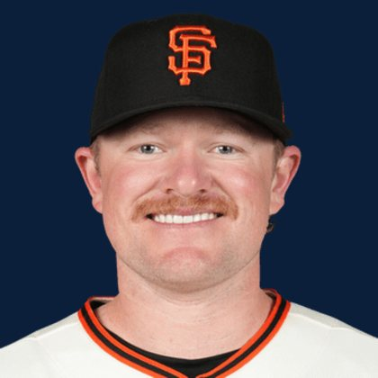

BASEBALLKEEP
Dynasty · Redraft · Diamond
Player File · SP SF

Logan Webb
#62 · SP · San Francisco Giants · age 29 · B/T RR · 6' 2" / 221 lbs · MLB debut 2019 · Rocklin, USA
Keep avg51.74
# Boards23
BK Value2,540
Spread28–69
Pitching
| Year | G | GS | W | L | SV | HLD | IP | K | BB | HR | ERA | WHIP | K/9 |
|---|---|---|---|---|---|---|---|---|---|---|---|---|---|
| 2026 | 22 | 22 | 8 | 7 | 0 | 0 | 139.0 | 110 | 32 | 9 | 3.50 | 1.06 | 7.12 |
| 2025 | 34 | 34 | 15 | 11 | 0 | 0 | 207.0 | 224 | 46 | 14 | 3.22 | 1.24 | 9.74 |
The Keep#52BK 2,540
BK's Pitchers#14BK 6,022
Redraft#52BK 2,540
Baseball Savant
Starcast · spray · pitch
Percentile ranks (Starcast) plus the official Savant spray chart for bats and pitch chart for arms. Open the full Baseball Savant page.
Pitcher · 2026
xERA
68
xwOBA
68
FB Velo
16
FB Spin
2
K %
30
BB %
89
Whiff %
14
Chase %
81
Barrel %
86
Hard Hit %
51
EV
70
Max EV
10
Pitch chart
Minus
- Board spread 28–69 (41 ranks).
Every Board
Spread 28–69 · 23 sources
| Source | Rank |
|---|---|
| Pitcher List | 28 |
| TDG Points | 42 |
| Dynasty League Baseball | 45 |
| Four-Seam Fantasy | 45 |
| Fantasy Baseballers | 46 |
| CBS Sports | 48 |
| Ottoneu | 49 |
| ESPN | 50 |
| NFBC ADP | 50 |
| Mastersball | 50 |
| Yahoo Fantasy | 50 |
| ATC ROS | 50 |
| The Athletic | 51 |
| Baseball Prospectus | 52 |
| The Dynasty Dugout | 52 |
| Baseball America | 52 |
| MLB Pipeline mix | 52 |
| FantasyPros Dynasty ECR | 57 |
| Razzball | 57 |
| Enos Slaughter | 57 |
| RotoGraphs Model | 69 |
| RotoWire | 69 |
| FanGraphs The Board | 69 |
On The Keep nearby — Hunter Brown (#50) · Wyatt Langford (#51) · Jesús Made (#53) · Carson Benge (#54)
All players · The Keep · BK News · The Lineup · Pitchers · Calculator